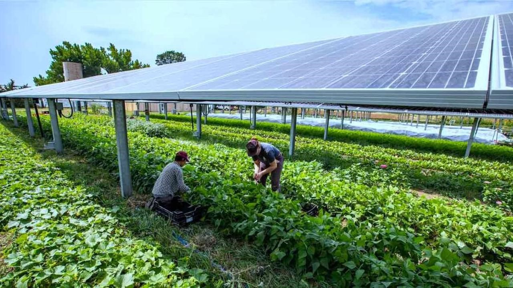
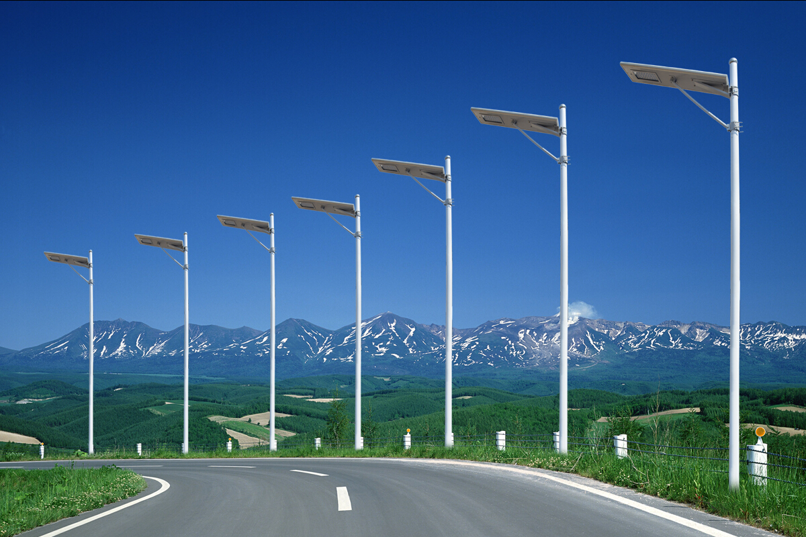
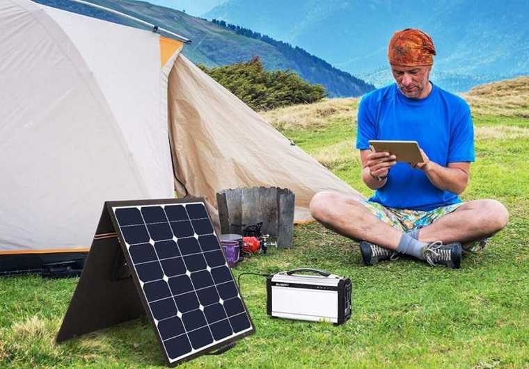

Way to Sustainable Development
Sustainable development is a concept that seeks to balance economic, social, and environmental goals to meet the needs of the present generation without compromising the ability of future generations to meet their own needs. It aims to create a harmonious and stable society that can continue to thrive over the long term, while also preserving the planet's natural resources and ecosystems.
Key principles of sustainable development include:
Solar panels are often highlighted in discussions about sustainable development because they offer several advantages that align well with the goals of sustainability. However, it's essential to note that sustainable development involves a broader range of technologies, strategies, and practices. Solar panels are just one component of a larger toolkit for achieving sustainability.
70,000 MW +
8,877 Mw +
by 80+%
60,783 total houses with solar panel
Solar energy is a renewable and sustainable source of power that comes from the sun's radiation. It can be harnessed and converted into electricity or thermal energy for various applications. Solar energy is considered clean and environmentally friendly because it does not produce harmful emissions or contribute to air pollution.
Solar PV technology is the most common way to convert sunlight into electricity. Solar panels, also known as solar modules, are made up of photovoltaic cells that capture sunlight and convert it into direct current (DC) electricity. Photovoltaic cells are typically made from semiconductor materials like silicon. When sunlight hits the PV cells, it excites electrons within the cells, creating an electric current. Inverters are used to convert the DC electricity produced by solar panels into alternating current (AC) electricity, which can be used to power homes, businesses, and the electrical grid.
Agriculture: Solar panels can power irrigation systems, electric fences, and other agricultural equipment in rural areas where grid access may be limited. They can also be used for crop drying and water pumping.
Street Lighting: Solar-powered streetlights are increasingly common in urban and rural areas. They store energy during the day and use it to illuminate streets and public spaces at night.
camping: Portable solar panels camping can be charged almost anywhere they can be set up at any location and there is no need to carry any fuel to generate electricity,thus saving space.With portable solar panels you can still game without any worries and they are Quieter than generators.
The history of solar panels dates back to the mid-19th century when French physicist Alexandre-Edmond Becquerel discovered the photovoltaic effect in 1839. However, it was not until 1954 that Bell Labs in the United States developed the first practical photovoltaic (PV) cell using silicon, ushering in the modern era of solar panels. These early solar cells were inefficient and expensive, primarily used for niche applications. Over the decades, advances in materials and technology led to improved efficiency and affordability. The oil crisis in the 1970s sparked interest in solar power, leading to increased research and development. Today, solar panels are a mainstream and rapidly growing source of clean energy worldwide.
Central Financial Assistance/Subsidy (CFA) is 30% of the benchmark cost for general and 70% CFA for North Eastern and Special Category States for residential, social and institutional sector.
This is an industrial subsidy on the solar panel. The financial support offered is 30 % of the project cost for canal top projects and 15% of the project cost on canal bank projects. The total amount CFA will distribute is INR 2.25 Billion for 100 MW for a maximum of two years. It will have to pay a 1% service charge to Solar Energy Corporation of India (SECI)